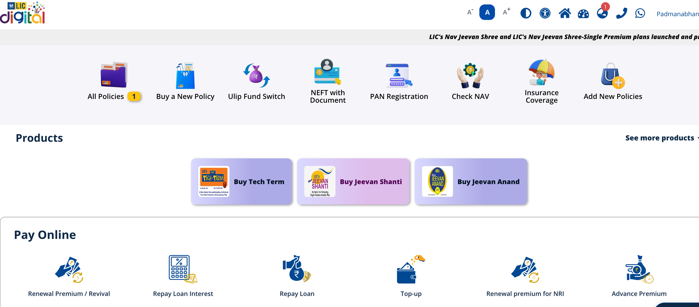
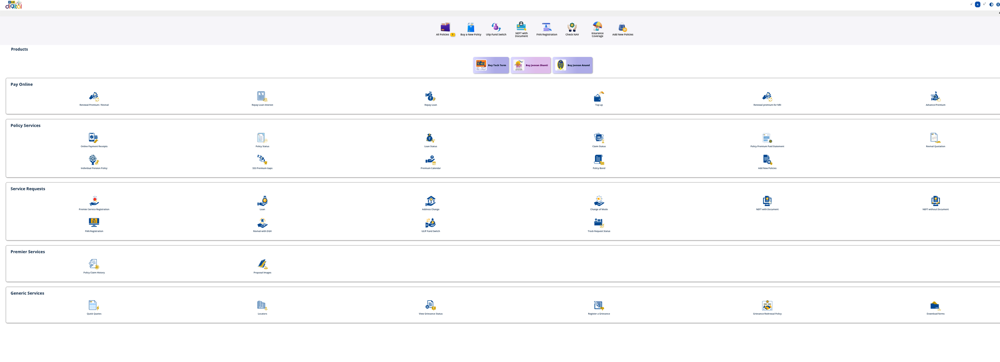
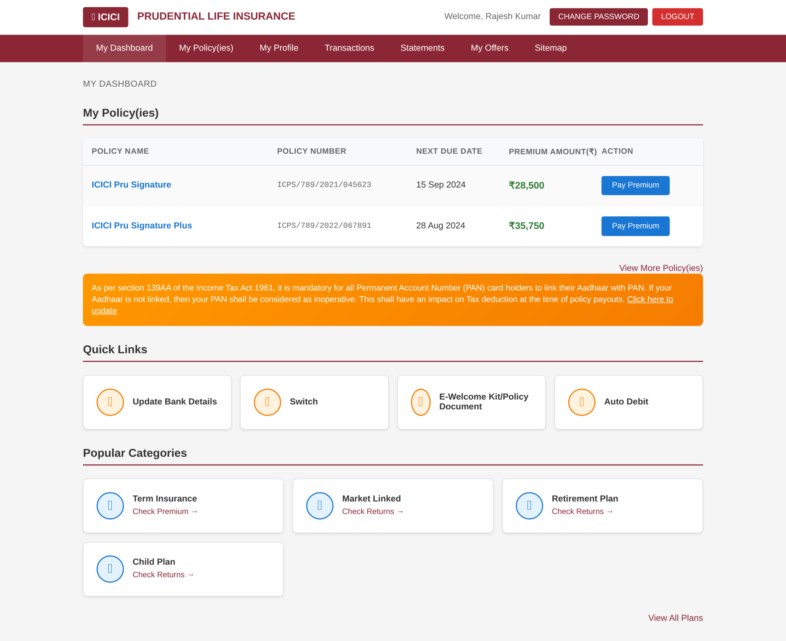
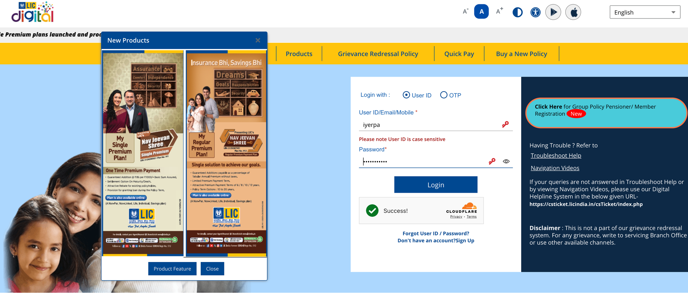
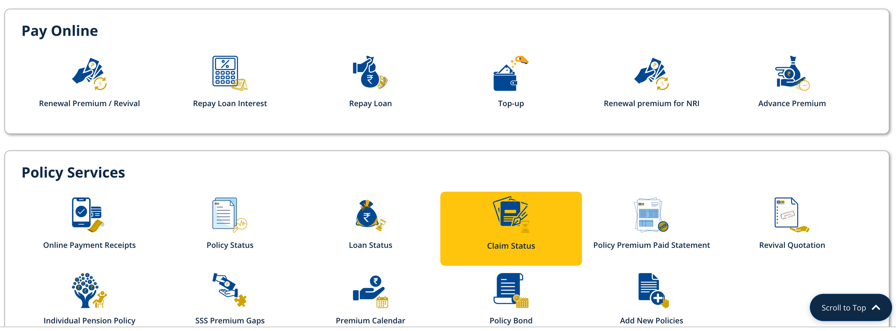
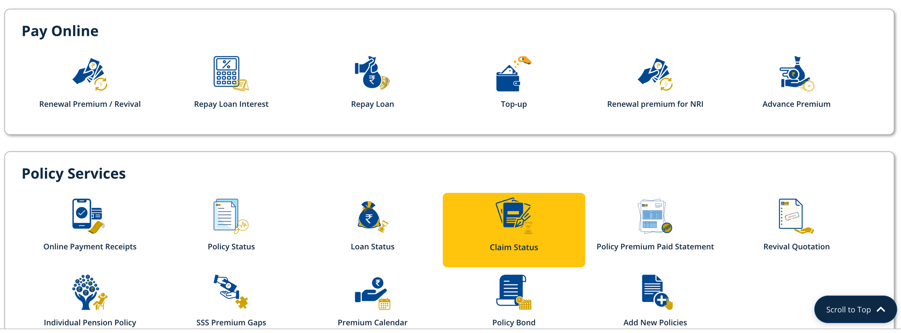
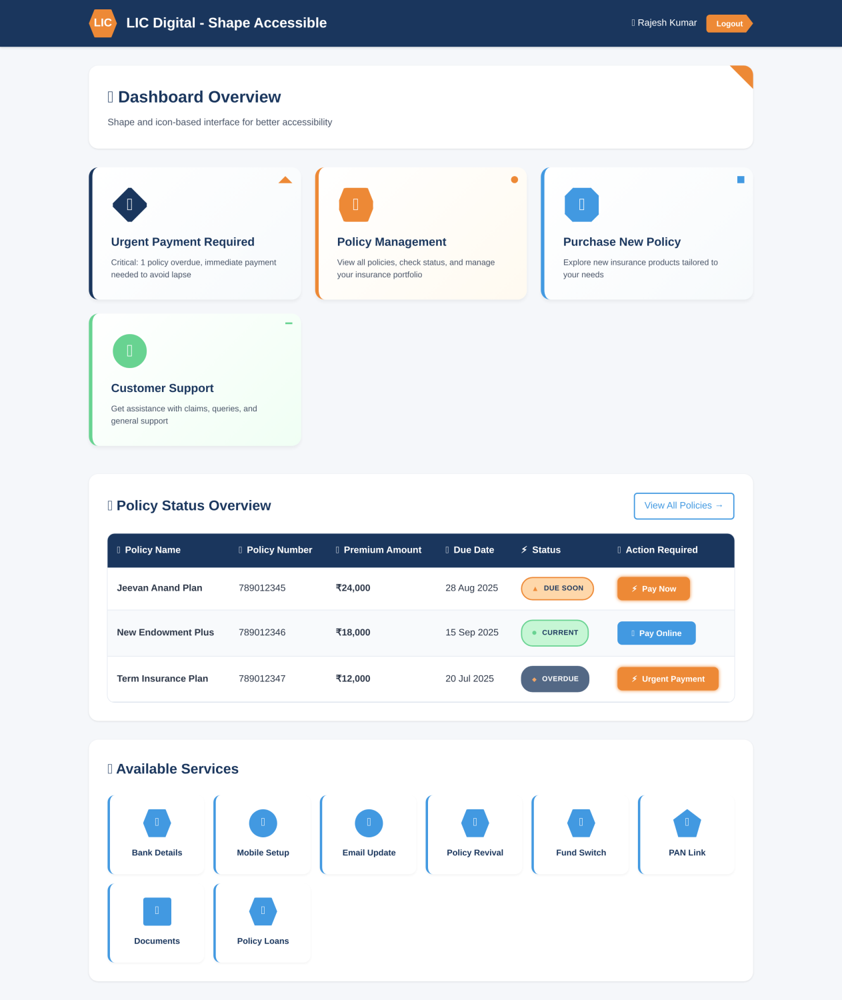
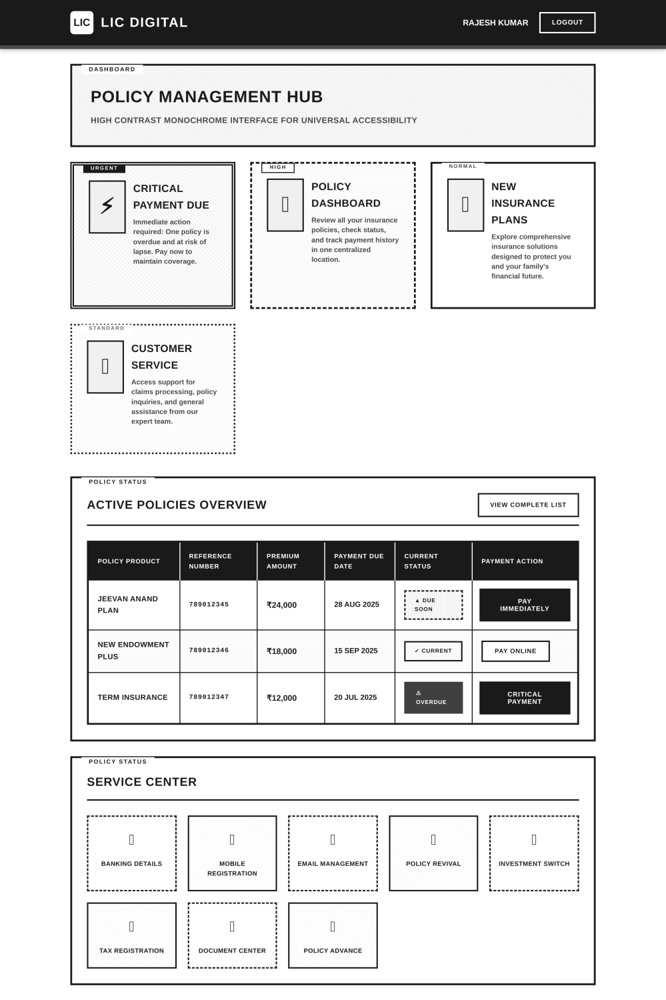
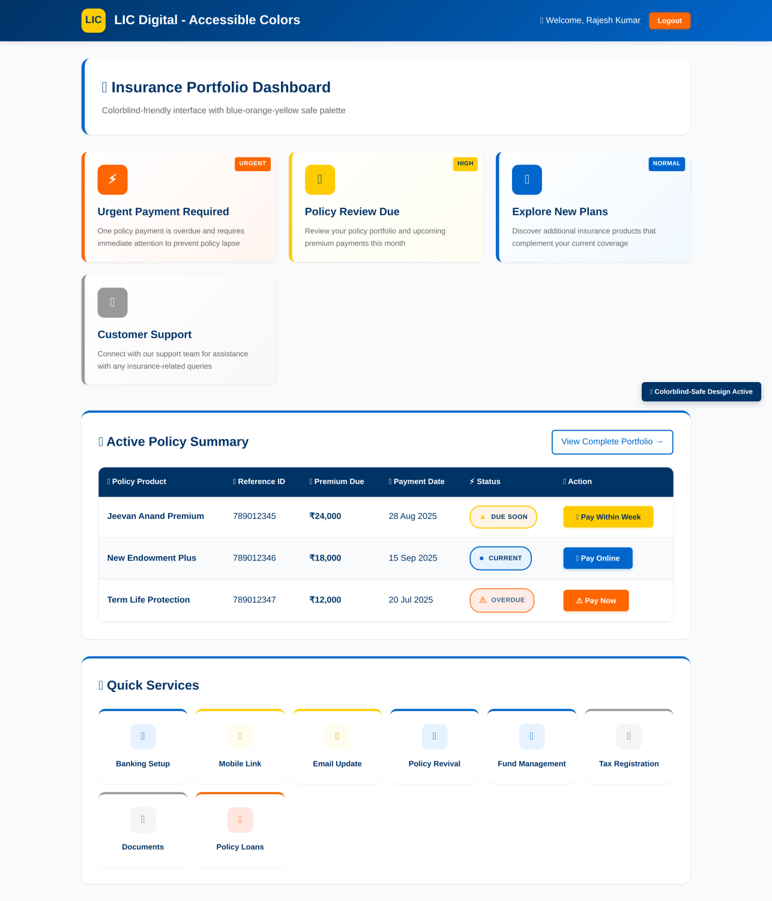
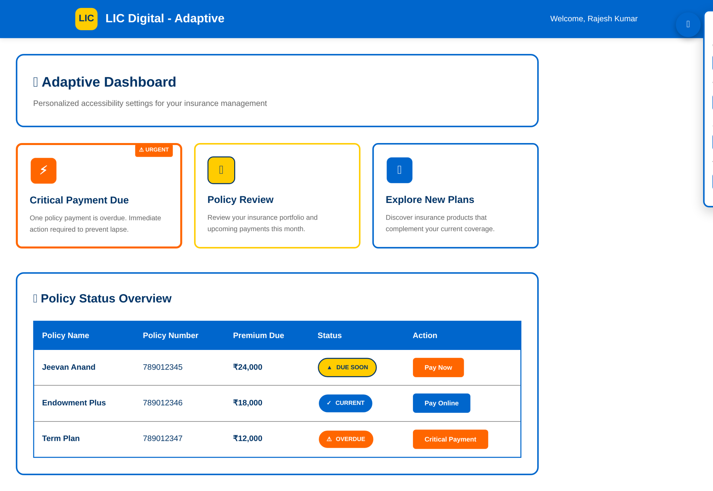

The Shocking Reality: 23 Million Users Left Behind
This is not hyperbole. This is mathematics.
Life Insurance Corporation of India Nirmala Sitharaman Indian Ministry of Finance Reserve Bank of India (RBI) ReBIT | Reserve Bank Information Technology Pvt. Ltd.
The Life Insurance Corporation of India serves 290 million policyholders. 8% of males and 0.5% of females have color vision deficiencies. That means approximately 23 million LIC users cannot properly distinguish the red-green status indicators that determine whether their policies are current, overdue, or at risk of lapse.
Twenty-three million people. That's the entire population of Australia. And they're being systematically excluded by design choices made decades ago.
I didn't write this to criticize LIC—I wrote this because silence is complicity when we have the power to fix systemic exclusion overnight.
The Brutal Truth: Interface Comparison That Will Shock You
I recently spent hours navigating LIC's digital ecosystem and comparing it with private sector alternatives. What I discovered wasn't just poor design—it was digital discrimination disguised as tradition.
LIC's Current Interface: A Masterclass in User Hostility
Look at this screenshot from LIC's actual portal:
Count the crimes against usability:
47 different clickable elements on a single dashboard
Zero visual hierarchy—everything screams for attention simultaneously
Inconsistent iconography that forces users to read every single option
Color-only status indicators that are invisible to colorblind users
Mobile interface that requires horizontal scrolling on 75% of Indian devices
This isn't just bad design. This is digital apartheid.
What Excellence Looks Like: The ICICI Prudential AMC Ltd Standard
Now contrast this with ICICI Bank Prudential's interface:
Clear task prioritization with obvious primary actions
Progressive disclosure that respects cognitive load
Consistent design language that users learn once and apply everywhere
Responsive design that works seamlessly across devices
The difference isn't subjective preference—it's measurable user success.
LIC's current interface exemplifies a classic "institutional approach" to digital design—comprehensive but overwhelming.
The landing page bombards users with competing elements: a promotional purple banner, multiple navigation menus, and generic "I want to" dropdowns that provide no clear path to common tasks. After login, users face an even greater challenge: 32+ distinct service options spread across categories like "Products," "Pay Online," "Policy Services," and "Service Requests," all presented with equal visual weight on a single screen. This creates what UX researchers call "choice paralysis"—when too many options lead to decision paralysis rather than task completion. Adding to the confusion, simple user journeys trigger unnecessary interruptions like external link warnings for internal pages and overlapping promotional popups that block functional elements. For India's 290 million LIC policyholders—many accessing these services on mobile devices with limited digital literacy—this interface design inadvertently transforms routine tasks like premium payment or policy checking into complex navigation challenges.
Specific Issues Identified:
Landing Page :

Visual chaos: Purple promotional banner competes with navigation elements
Poor task guidance: "I want to" and "I am" dropdowns provide no clear user paths
Multiple competing CTAs: Users don't know where to focus attention
User Flow Disruptions :
Unnecessary confirmations: External link warnings for internal LIC pages

Blocking popups: "New Products" overlay prevents users from accessing login
Interrupted journeys: Multiple steps for simple tasks
Post-Login Dashboard :
Information overload: 32+ service options displayed simultaneously
No visual hierarchy: All options appear equally important
 
Cognitive burden: Users must process extensive menu systems to find basic functions
Mobile hostile: Dense layouts impossible to navigate on smartphones
The Impact:
Increased support calls: Users abandon online tasks and call customer service
Lower completion rates: Complex navigation leads to task abandonment
Accessibility barriers: Elderly users and those with limited digital literacy struggle
Competitive disadvantage: Users migrate to simpler private sector alternatives
And the fix?.....

The AI-Powered Solution: Designs That Work for Every Indian
I didn't just identify the problem—I solved it. Using modern design principles and AI-assisted accessibility tools, I created four distinct interface approaches that would transform LIC's user experience overnight:
Design 1: High-Contrast Pattern-Based Interface
Revolutionary accessibility features:
Pure black and white color scheme with 100% contrast ratios
Pattern differentiation using stripes, dots, and textures instead of color
Shape-based priority indicators that work for every type of vision
Typography hierarchy that guides users through complex tasks effortlessly

Impact: Immediately accessible to users with severe visual impairments while reducing cognitive load for all users.
Design 2: Shape & Icon-Based System
Next-generation visual communication:
Blue-orange color palette scientifically proven to work for 99.9% of color vision variations
Geometric shape coding (diamonds for urgent, hexagons for important, circles for complete)
Icon-text redundancy ensuring no user is left guessing
Animated priority indicators that draw attention without overwhelming
Impact: Combines universal accessibility with modern aesthetic appeal.
Design 3: Monochrome Typography-Driven Design
When color isn't an option:
Complete grayscale palette eliminating color dependency entirely
Typography as primary communication using weight, size, and spacing
Textural backgrounds providing visual interest without color
Border style coding (solid, dashed, double) for different priority levels
Impact: Works perfectly for complete color blindness while maintaining professional appearance.
Design 4: Scientifically Optimized Color-Safe Palette
The perfect balance:
Research-based color selection using blue (#0066CC), orange (#FF6600), yellow (#FFCC00)
Triple redundancy with color + shape + text for every element
Accessibility compliance meeting WCAG 2.1 AA standards automatically
Adaptive theming that adjusts based on user preferences
Impact: Modern, beautiful, and accessible to virtually every user.
Design 5: Adaptive Intelligence Interface
The future of inclusive design:
Real-time accessibility detection that adapts to user behavior
Personalized interface optimization based on interaction patterns
One-click accessibility modes for different vision needs
AI-powered layout adjustment that learns from user struggles
Impact: Self-improving interface that becomes more accessible over time.
The Numbers Don't Lie: What This Means for Business
Customer Service Cost Reduction: When users can't complete tasks online, they call support. LIC handles over 100 million customer interactions annually. Even a 10% reduction in friction-based calls would save ₹50+ crores in operational costs.
Task Completion Rates: Private insurers see 73% online task completion rates. Government institutions average 31%. The difference is pure interface design.
Market Share at Risk: In 2023 alone, 15.7 million new insurance policies were sold in India. Every confused user who abandons LIC's interface becomes someone else's customer.
Accessibility Compliance: The Rights of Persons with Disabilities Act, 2016 legally requires digital accessibility. Non-compliance isn't just bad business—it's potentially illegal.
The AI Revolution: From Problems to Solutions in Days, Not Years
Here's what will shock traditional IT departments: Modern AI tools can implement these accessibility improvements in weeks, not months.
Automated Design Generation
AI can analyze LIC's existing user flows and automatically generate accessible alternatives for every screen. No lengthy requirements gathering. No endless design committees. Just measurable improvement, immediately.
Intelligent Color Palette Optimization
Machine learning algorithms can instantly identify problematic color combinations and suggest scientifically-proven alternatives that work for all vision types.
Predictive Accessibility Testing
AI tools can simulate how interfaces appear to users with different vision conditions and automatically flag exclusionary design patterns before they reach users.
Behavioral Analytics for Continuous Improvement
Real-time analysis can identify when users struggle with interface elements and automatically trigger design improvements without human intervention.
The Moral Imperative: Why This Cannot Wait
Every day LIC delays accessibility improvements, 23 million users struggle needlessly.
This isn't about competitive advantage anymore—it's about basic human dignity. In 2024, there is zero excuse for digital interfaces that exclude people based on biological differences they cannot control.
Consider these real scenarios:
Ramesh, a 52-year-old farmer with deuteranopia, cannot distinguish between "premium paid" and "premium overdue" statuses, leading to accidental policy lapses
Dr. Kavitha, a 67-year-old retiree with age-related vision changes, abandons online premium payments due to low contrast text, increasing administrative costs
Arjun, a 34-year-old software engineer with normal vision on a bright sunny day, cannot see critical policy information due to poor contrast ratios
These aren't edge cases. These are everyday failures of inclusion.
The Competition is Moving: Act Now or Be Left Behind
While LIC debates and committees meet, private insurers are implementing AI-driven accessibility features at unprecedented speed.
HDFC ERGO launched voice-enabled policy management. Bajaj Allianz implemented predictive interface optimization. ICICI Prudential deployed automated accessibility compliance checking.
LIC's traditional advantage—trust and reach—becomes meaningless if users can't actually use their services.
The Blueprint for Immediate Action
Week 1-2: Accessibility Crisis Assessment
Automated audit of all user interfaces using AI accessibility tools
Immediate identification of color-dependent elements affecting colorblind users
Priority ranking of fixes based on user impact and implementation difficulty
Week 3-6: Emergency Accessibility Fixes
Color palette replacement with scientifically-proven alternatives
Icon and text redundancy added to all visual indicators
Contrast ratio optimization using automated tools
Mobile responsiveness improvements for smartphone users
Month 2-3: AI-Powered Interface Regeneration
Machine learning analysis of user behavior patterns
Automated generation of personalized interface layouts
A/B testing of AI-suggested improvements against current interfaces
Behavioral analytics integration for continuous optimization
Month 4-6: Predictive Accessibility Platform
Real-time adaptation to user accessibility needs
Proactive intervention when users show signs of interface difficulty
Personalized accessibility profiles that improve over time
Voice and gesture alternatives for complex interactions
The Cost of Inaction: What LIC Stands to Lose
₹500+ crores in operational savings from reduced customer service calls 15% increase in digital adoption based on private sector benchmarks Millions of new users who currently avoid digital interactions due to accessibility barriers Compliance with legal requirements for disability inclusion Brand leadership in the age of inclusive technology
The Opportunity: Leadership in Digital Inclusion
LIC has the unique opportunity to become India's accessibility leader. Not because they have to, but because they can show that serving everyone isn't just morally right—it's economically brilliant.
Imagine the headlines:
"LIC Sets New Standard for Digital Inclusion in Financial Services"
"How AI Helped India's Largest Insurer Serve Every Citizen Equally"
"LIC's Accessibility Revolution Saves Crores While Serving Millions"
The Urgent Call to Action
This is not a theoretical exercise. This is a crisis requiring immediate action.
To LIC's leadership: Your users are waiting. The technology exists. The moral imperative is clear.
To the financial services industry: The benchmark for inclusive design is being set now. Lead or be left behind.
To technology leaders: We have the tools to eliminate digital discrimination. Silence makes us complicit.
The question isn't whether LIC will eventually implement accessible design—it's whether they'll lead the transformation or follow from behind.
Every day of delay is another day that 23 million Indians struggle with interfaces that don't work for them. In the age of AI, this is not just preventable—it's inexcusable.
The technology exists. The need is urgent. The time is now.
What will it take for us to stop accepting digital discrimination as inevitable?
Share this if you believe digital inclusion cannot wait. Tag leaders who have the power to implement change. Let's make digital exclusion history.
#DigitalInclusion #AccessibilityNow #LIC #AI #DesignJustice #IndiaFirst #UserExperience #TechForGood #UI/UX